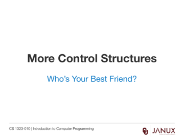
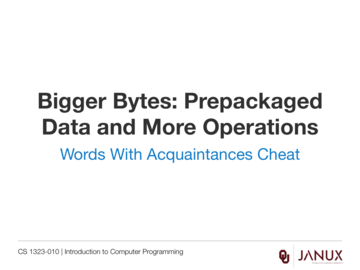

Review for Second Midterm
CS 1323 Fall 2015 Midterm 2
CS 1323 Fall 2015 solution to Midterm 2
Several examples of examinations that test the topics covered in the second quarter of the course.
Several example documents of Midterm solutions.
Class Paper for the midterm.
Class TabStop for the midterm.

